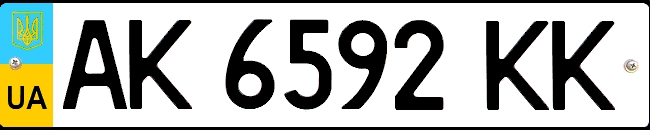

Welcome to LearnGeoguessr!
The site is still work in progress and is ment for begginers!
For more experienced GeoGuessr players I recommend GeoHints and GeoTips
The goal of this site is to help you learn some basic meta and a few tricks to set you on a path of becoming the next GeoGuessr prodigy.
Even though there are a few sites out there that are quite useful for learning GeoGuessr,
I feel like they are very unorganized and a bit hard to get into for begginers,
and exactly that's the reason why this site was created.
Use the menu on the left side of the screen for navigation!
Your opinion means a lot!
Leave your feedback here
Meta
Cameras
penis
License plates
European plates
This is an example of a typical EU plate with the blue line on the left end.
And these are the yellow EU plates found in The Netherlands and Luxembourg (yellow front and rear),
and in the UK and France (yellow rear and white front).

Portugal
Here are typical plates from Portugal, easily identifiable by the yellow line on the right end.
Italy
Plates from Italy usually have the blue line on the right side too.
Albania
Like Italy, Albania usually has the blue line on the right side too, but some plates just have a red line on the left end.
Isle of Man
Isle of Man plates with the red elements on the left end.
France
What makes France special is that there is a thin blue line on the right end
and there are both double white plates and white front yellow rear plates.
Belgium
Belgian plates are easy to recognise by the EU blue stripe and red lettering on the plates.
Ukraine

Plates in Ukraine have a slight blue and yellow coloring on the left end.
Rest of Europe
Switzerland, Iceland, Russia, most of the Croatian plates and some plates in North Macedonia are white.
These stand out for lacking the blue stripe of EU.
American plates
Support this site
Every bit helps, but donate only if you are sure!